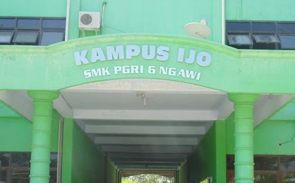
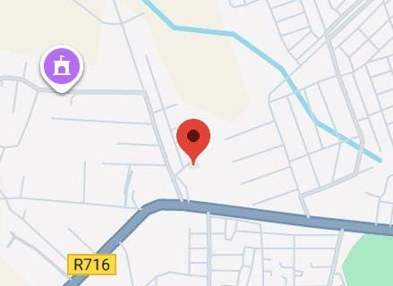

Tentang Saya
Saya Tegar Tri Abadi, pelajar kelas 10 jurusan Teknik Komputer dan Jaringan di SMK PGRI 6 Ngawi. Ketertarikan saya pada pengembangan web berawal dari rasa ingin tahu tentang cara kerja sebuah website, yang kemudian saya kembangkan melalui proyek-proyek praktis.
Saat ini saya fokus mempelajari dasar-dasar front-end development, meliputi HTML, CSS, dan JavaScript, serta konsep dasar jaringan komputer sesuai dengan jurusan yang saya ambil.
Pendidikan
SMK PGRI 6 Ngawi
Jurusan Teknik Komputer dan Jaringan
Jl. Raya Klitik KM.05, Klitik, Geneng, Ngawi

Lihat Lokasi SekolahLokasi
Plampoan II, Geneng, Kabupaten Ngawi, Jawa Timur 63271

Lihat di Google Maps